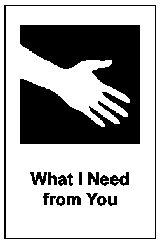

What I Need From You (WINFY)
In breve - WINFY chiarisce cosa serve da altre funzioni o team: ognuno esprime bisogni concreti in modo strutturato e costruttivo.
- Durata
- variabile
- Difficoltà
- Intermedia
- Gruppo
- da 9 a 49 persone (3/7 cluster)
- Fase
- Testare
Domanda da portare
- "Di cosa hai bisogno dagli altri per raggiungere uno specifico obiettivo?"
- "Di cosa ha bisogno il reparto vendite dal marketing per raggiungere gli obiettivi trimestrali?"
- "Cosa serve al team di sviluppo dal product management per rispettare le scadenze?"
Cosa ti serve
- Sala ampia per ospitare 3-7 cluster funzionali.
- Sedie disposte in cerchio al centro per i portavoce.
- Spazio per i cluster lungo le pareti.
- Fogli per registrare richieste e risposte.
- Cartellini con le possibili risposte (sì, no, ci proverò, canguro) .
I passaggi
Introduzione spiegazione del processo.
5 minChiarimento delle regole sulle risposte possibili: "sì", "no", "ci proverò", "canguro".
Contestualizzare con chiarezza il significato della risposta "canguro" (es. "al momento non abbiamo abbastanza elementi per rispondere").
Lavoro nei cluster utilizzo della microstruttura 1-2-4-all.
10 minIdentificazione delle due principali richieste.
Selezione del portavoce.